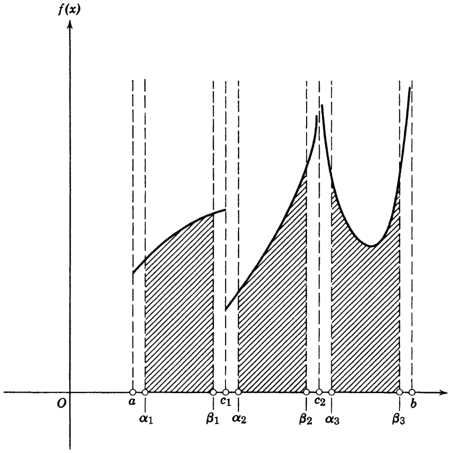
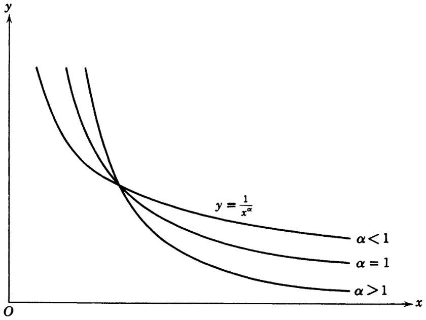
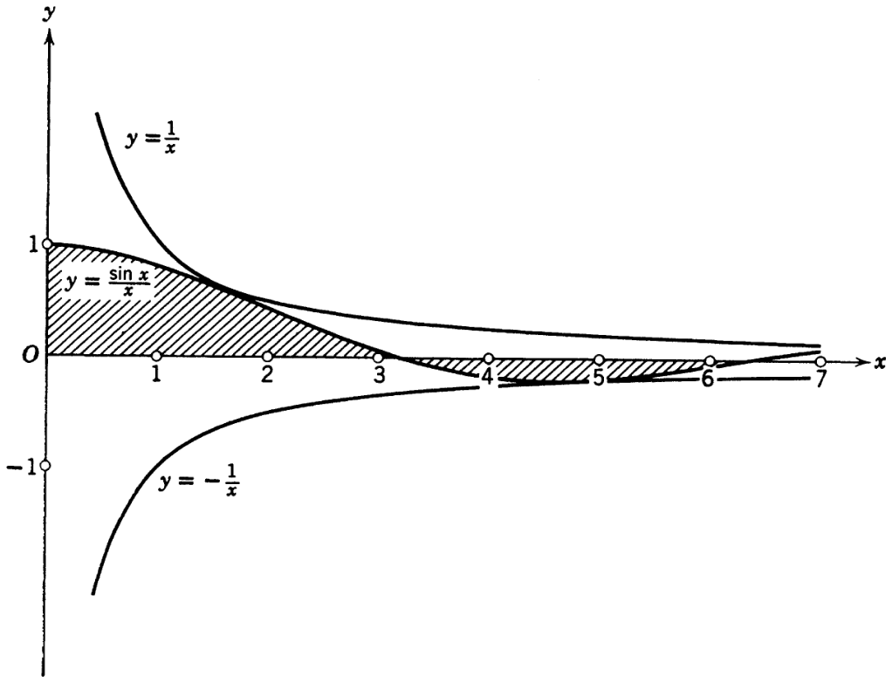

a. 引言。反常积分的定义
第二章第 128 页上，我们把区间 [a,b] 分成 n 个小区间，在每个长为 Δxi 的小区间任选一点 ξi，作黎曼和
Fn=i=1∑nf(ξi)Δxi.无论取怎样的一系列分割和中间点，只要最大的小区间长度趋于零，如果 Fn 总有同一个极限 Fab，我们就把这个极限定义为 ∫abf(x)dx。当 f(x) 在 [a,b] 上连续时，我们已经证明这个极限存在。但有时，f(x) 在闭区间 I 上有些点没有定义或不连续，还有时积分区间一直延伸到无穷远。我们也希望能给这样的表达式以适当的意义，例如
∫01x1dx,∫01sinx1dx,∫0∞e−xdx,∫1∞x2sinxdx.先考虑在开区间 (a,b) 内连续，在端点 a,b 未必有定义或未必连续的函数。任取 a<α<β<b，通常意义下的积分 ∫αβf(x)dx 都有定义。取 a<αϵ<βϵ<b，使 limϵ→0αϵ=a，limϵ→0βϵ=b。若极限
F=ϵ→0lim∫αϵβϵf(x)dx存在，且与 αϵ,βϵ 的具体取法无关，就说反常积分 ∫abf(x)dx 收敛，其值为 F。
分段连续的被积函数。 更一般地，设 f(x) 在 (a,b) 内除有限多个中间点 c1,c2,…,cn 外都有定义且连续。我们把 (a,c1),(c1,c2),…,(cn,b) 上各个反常积分的和定义为 ∫abf(x)dx，前提是每一项都收敛。
若 f 在有限开区间 (a,b) 内连续且有界，则反常积分 ∫abf(x)dx 总收敛。例如，
∫01sinx1dx=ϵ→0lim∫ϵ1sinx1dx收敛。为简便起见，证明时设 f 在 b 处连续，在 a 处则不作此假定。按定义，
∫abf(x)dx=α→alimF(α),F(α)=∫αbf(x)dx(a<α<b).设 M 是 ∣f∣ 的上界，αn 是趋于 a 的数列。由积分中值定理，∣F(αn)−F(αm)∣≤M∣αn−αm∣。柯西收敛准则于是给出 limn→∞F(αn) 的存在性。这对每个趋于 a 的数列都成立，所以 limα→aF(α) 存在。
事实上，若 f 在 (a,b) 内连续且有界，还可以在 a,b 两点给它任意指定函数值，然后直接取黎曼和的极限，把 ∫abf(x)dx 作为通常的定积分求出。容易看出，两种定义给出相同的值，与指定的 f(a),f(b) 无关。更一般地，一个有界函数即使在 (a,b) 内有有限多个例外点，结论仍然成立，只要在其余各点有定义且连续即可。特别地，若只有有限多个跳跃间断点，积分就一定存在。因此，在这里讨论的有限区间和分段连续的情形中，只有函数变为无穷大时，收敛性才需要另加考察。

图 3.30 有间断点的函数的积分。
积分仍可解释为曲线下的面积，与连续函数的情形相同（图 3.30）。
b. 具有无穷间断点的函数
先考察 J=∫01dx/xα，其中 α>0。当 x→0 时，被积函数 1/xα 趋于无穷大。因此先从正数 ϵ 积到 1，再让 ϵ 趋于零。当 α=1 时，
Jϵ=∫ϵ1xαdx=1−α1(1−ϵ1−α).若 α>1，右端趋于无穷大，原积分发散。若 α<1，右端趋于 1/(1−α)，这就是 J 的值。还有第三种情形 α=1，此时 Jϵ=−logϵ，也趋于无穷大，因此 ∫01dx/x 发散。
再如 f(x)=1/1−x2。我们有
∫01−ϵ1−x2dx=arcsin(1−ϵ).当 ϵ→0 时，右端趋于 π/2。所以尽管被积函数在 x=1 处趋于无穷大，仍有 ∫01dx/1−x2=π/2。
c. 面积解释
对有界区域的面积取极限，便可把某些延伸到无穷远的区域的面积解释为反常积分。例如，x 轴、直线 x=1、x=ϵ 以及曲线 y=1/xα 所围的面积，在 ϵ→0 时有如下表现：若 α<1，面积趋于有限极限；若 α≥1，面积趋于无穷大。我们可以简明地说，x 轴、y 轴、曲线 y=1/xα 与直线 x=1 之间的面积，依 α<1 或 α≥1 而为有限或无限。仅凭几何直观，很难判定一个伸向无穷远的区域的面积究竟有限还是无限。图 3.31 上这几条曲线就说明了这一点。

图 3.31 反常积分的收敛与发散。
d. 收敛判别法
若被积函数在 x=b 有无穷间断点，常可用以下准则判断积分是否收敛。设 f(x) 在 a≤x<b 上连续，且 limx→bf(x)=∞。若存在 0<μ<1 和一个与 x 无关的数 M，使得整个区间上 ∣f(x)∣≤M/(b−x)μ，则 ∫abf(x)dx 收敛。换言之，f(x)=O[1/(b−x)μ]，其中 μ<1，即 f 在 b 处成为低于一阶的无穷大。反过来，若有 ν≥1 和固定的正数 N，使 f(x)≥N/(b−x)ν，则积分发散。此时正函数 f 在 b 处至少是一阶无穷大。
只要同刚才讨论的例子比较，证明就几乎是现成的。为证第一部分，注意当 0<ϵ<b−a 时有
0≤(b−x)μM+f(x)≤(b−x)μ2M,因而
0≤∫ab−ϵ[(b−x)μM+f(x)]dx≤∫ab−ϵ(b−x)μ2Mdx.令 ϵ→0，最右边的积分有极限（作代换 x↦b−x 即归结为前面的幂函数积分），因而有界。中间的积分单调增加而有界，也必有极限。于是
∫ab[(b−x)μM+f(x)]dx=ϵ→0lim(∫ab−ϵ(b−x)μMdx+∫ab−ϵf(x)dx)收敛。减去收敛的第一项，即知 ∫abf(x)dx 收敛。第二部分的证明留给读者。
译者注 原书第 306 页上式左端在第一项后多印了一个 dx。同一括号内相加的是两个函数，整个括号只乘一次 dx。
无穷间断点若在积分下限，准则完全类似；若在区间内部，就从该点分成两段，对两段分别讨论。例如，考察椭圆积分
∫01(1−x2)(1−k2x2)dx(k2<1).由 1−x2=(1−x)(1+x) 可见，当 x→1 时，被积函数只成为 1/2 阶无穷大，所以积分收敛。（若 k=1，积分则发散。）
e. 无穷积分区间
积分概念的另一项重要推广是容许无穷积分区间。固定 a，若 ∫aAf(x)dx 在 A→∞ 时趋于一个确定的极限，就把这个极限定义为 f(x) 在 x≥a 上的积分，称此积分收敛：
A→∞lim∫aAf(x)dx=∫a∞f(x)dx.例。 仍取 f(x)=1/xα。当 α=1 时，
∫1Axαdx=1−αA1−α−1.若 α>1，便有 ∫1∞dx/xα=1/(α−1)；若 α<1，积分不存在。若 α=1，积分 logA 趋于无穷大，同样发散。可见从 1 积到无穷远，与从原点积到 1 的情形正好相反。再看图 3.31，当 x→∞ 时，α 越大，曲线贴近 x 轴就越快，因而对于充分大的 α，面积趋于有限极限也是可以理解的。
收敛准则。 设 x 足够大时（譬如 x≥a）f(x) 连续。若 f(x) 在无穷远处是高于一阶的无穷小，即存在 ν>1 和固定常数 M，对一切充分大的 x 都有 ∣f(x)∣≤M/xν，也就是 f(x)=O(1/xν)，则 ∫a∞f(x)dx 收敛。若 f(x) 保持为正，且趋于零的阶不高于一阶，具体说，存在固定的 N>0 使 xf(x)≥N，则积分发散。证明与前面完全平行，留给读者。
例如，∫a∞dx/x2（a>0）的被积函数在无穷远处是二阶无穷小。由 ∫aAdx/x2=1/a−1/A，立刻得到 ∫a∞dx/x2=1/a。另一个同样简单的例子是
∫0∞1+x2dx=A→∞lim(arctanA−arctan0)=2π.被积函数是偶函数，因此 ∫−∞+∞dx/(1+x2)=π。有趣的是，曲线 y=1/(1+x2) 与 x 轴之间延伸到无穷远的面积，恰好等于半径为 1 的圆的面积（见第 216 页图 3.8）。
f. 伽马函数
一个在分析学中格外重要的例子是伽马函数
Γ(n)=∫0∞e−xxn−1dx(n>0).把积分拆成从 0 到 1 和从 1 到 ∞ 两段。前一段收敛，因为 0<e−xxn−1<1/xμ，其中 μ=1−n<1。后一段也满足收敛准则。例如取 ν=2，有 limx→∞x2e−xxn−1=0，因为指数函数 e−x 比任何幂 1/xm（m>0）趋于零都快（见第 253 页）。
这里的 n 不必是整数。作为 n 的函数，Γ(n) 满足一个值得注意的关系。取 f(x)=xn−1，g′(x)=e−x，分部积分得
∫e−xxn−1dx=−e−xxn−1+(n−1)∫e−xxn−2dx.从 0 积到 A，再令 A→∞，得到
Γ(n)=(n−1)∫0∞e−xxn−2dx=(n−1)Γ(n−1)(n>1).若 μ 为整数且 0<μ<n，重复应用递推式，便有
Γ(n)=(n−1)(n−2)⋯(n−μ)∫0∞e−xxn−μ−1dx.特别地，若 n 为正整数，取 μ=n−1，末项积分便是 ∫0∞e−xdx=1，所以
Γ(n)=(n−1)(n−2)⋯2⋅1=(n−1)!.这是用积分表示阶乘的一个十分有用的公式。
其他例子。 由同一判别法容易看出，∫0∞e−x2dx 和 ∫0∞xne−x2dx 也收敛。作代换 x2=u，dx=du/(2u)，第一式等于 21Γ(21)，第二式在 n>−21 时等于 21Γ[(n+1)/2]。
译者注 n>−21 是第 309 页原书给出的范围。这个等式实际对一切 n>−1 都成立，因为换元后伽马函数的参数 (n+1)/2 只须大于零。
g. 狄利克雷积分
在应用中，许多积分的收敛性不能直接从上述判别法推出。狄利克雷研究的一个重要例子是
I=∫0∞xsinxdx.上限有限时不存在困难，因为在 x=0 处取极限值 1，就使 (sinx)/x 在每个有限的 x 处都连续。I 的收敛有赖于被积函数周期性地变号。相邻两个长度为 π 的区间对积分的贡献几乎互相抵消（图 3.32）。曲线与 x 轴之间有无穷多块面积，把轴上方的算作正的、下方的算作负的，加起来就收敛；若一律取绝对值，则可以证明 ∫0∞∣sinx∣dx/x 发散。

图 3.32 函数 y = (sin x)/x 的图像。
因为 sinx 正负交替，它的一个原函数 ∫sinxdx=1−cosx 对一切 x 都有界。利用这一点来估计
IAB=∫ABxsinxdx=∫ABx1dxd(1−cosx)dx.分部积分得
IAB=B1−cosB−A1−cosA+∫ABx21−cosxdx.因此
∫0∞xsinxdx=A→0B→∞limIAB=∫0∞x21−cosxdx.右端的积分显然收敛，故 I 存在。到第 8.4c 节，我们还要证明一个特别的结果，I=π/2。
译者注 最后一步在两端用的是不同估计。x→0 时，由 1−cosx=2sin2(x/2)，被积函数趋于 1/2；x→∞ 时，其绝对值不超过 2/x2。
h. 换元。菲涅耳积分
收敛的反常积分同样适用换元等运算法则，换元往往能得到更易处理的表达式。例如，令 u=x2，就有
∫0∞xe−x2dx=21∫0∞e−udu=A→∞lim21(1−e−A)=21.光的衍射理论中出现的菲涅耳积分又给出两个例子：
F1=∫0∞sin(x2)dx,F2=∫0∞cos(x2)dx.令 x2=u，得到
F1=21∫0∞usinudu,F2=21∫0∞ucosudu.分部积分得
∫ABusinudu=B1−cosB−A1−cosA+21∫ABu3/21−cosudu.让 A 和 B 分别趋于零和无穷大，照狄利克雷积分的论证，就知道 F1 收敛。F2 的收敛性也可以同样证明。
菲涅耳积分说明，反常积分可以收敛，即使 x→∞ 时被积函数并不趋于零。被积函数甚至可以无界。例如，考虑
∫0∞2ucos(u4)du.当 u4=nπ，即 u=4nπ（n=0,1,2,…）时，被积函数为 24nπcosnπ=±24nπ，因而无界。但作代换 u2=x，就得到刚证明收敛的 ∫0∞cos(x2)dx。
换元还常能把反常积分化成通常的定积分。例如，取 x=sinu，便有
∫011−x2dx=∫0π/2du=2π.反过来，连续函数的通常积分也可能在换元后成为反常积分。若代换 u=ϕ(x) 在积分区间端点满足 ϕ′(x)=0，以致 dx/du 变为无穷大，就会发生这种情形。